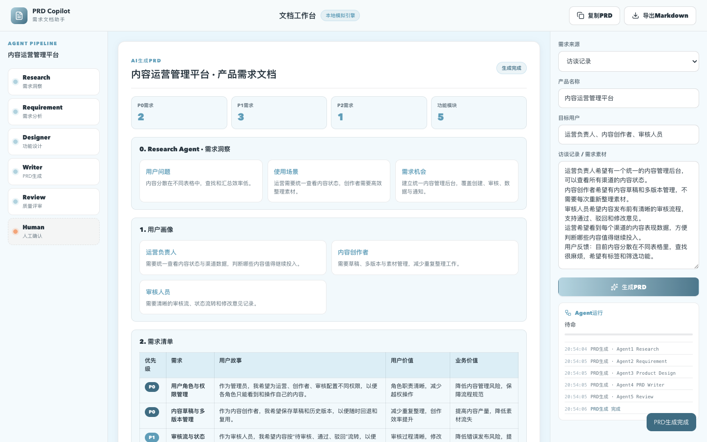

核心假设：AI能否降低产品经理需求分析和PRD撰写成本
产品定位
- 面向产品团队
- AI需求分析与产品设计Agent
- 产品经理的智能协作伙伴
核心价值
- 需求洞察
- 需求分析
- 产品设计
- PRD生成与评审
设计原则
- AI不是替代人写文档
- 人工在环
- 结果可解释
AI Product Manager Agent：从需求发现到PRD评审的完整工作流。
AI Product Manager Agent：从需求发现到PRD评审的完整工作流。
大量时间消耗在整理，而不是判断。
访谈、会议、竞品资料分散，需求容易遗漏。
同一份信息被反复整理、排版、改写。
缺少标准流程和模板，产出质量不稳定。
需求完整性、边界情况和验收标准因人而异。
负责新产品需求分析，需要从访谈和反馈中提炼需求。
负责新产品需求分析，面对大量访谈和反馈。
整理需求素材、分析用户问题、设计功能、撰写PRD。
信息整理耗时，需求容易遗漏，PRD修改频繁。
收到50份用户访谈记录，需要整理成需求池并产出PRD。
需要快速评审多个需求方案。
需要在一周内评审多个需求方案。
判断需求是否清晰、功能是否合理、范围是否可控。
PRD结构不一致，评审效率低，边界情况常被遗漏。
通过AI Review提前获得质量评分和问题列表，聚焦高风险需求。
学习产品设计流程，完成第一份PRD。
在真实产品团队中学习需求分析和PRD撰写。
模仿模板撰写PRD，理解需求分析和功能设计。
缺少标准流程，不知道PRD应该包含什么。
通过PRD Copilot获得标准结构和验收标准示例，基于初稿学习修改。
六步完成从输入素材到PRD评审。
五个Agent协作完成产品经理工作流。
Research Agent
理解资料，输出用户洞察
Requirement Analyst
用户故事与优先级
Product Designer
功能、流程、页面
PRD Writer
标准PRD生成
Review Agent
质量评分与建议
理解输入资料，提炼用户洞察。
将洞察转化为用户故事和需求列表。
Research Agent的用户洞察
辅助产品方案设计。
需求清单与用户故事
生成标准PRD。
用户画像、需求清单、功能方案
模拟产品负责人评审。
PRD Writer生成的PRD
F1至F7覆盖产品经理完整工作流。
| 功能 | 用户价值 | 状态 |
|---|---|---|
| F1 多源需求输入 | 减少人工整理 | 已实现 |
| F2 AI需求洞察 | 快速获得用户问题与机会 | 已实现 |
| F3 用户画像生成 | 统一用户理解 | 已实现 |
| F4 AI需求池管理 | 可维护的需求池 | 已实现 |
| F5 功能方案设计 | 快速评估产品方案 | 已实现 |
| F6 PRD自动生成 | 减少重复撰写 | 已实现 |
| F7 AI PRD Review | 提前发现问题 | 已实现 |
PRD Copilot的机会是垂直产品经理工作流Agent。
| 产品 | 优势 | 不足 | PRD Copilot机会 |
|---|---|---|---|
| ChatGPT | 通用能力强 | 缺少产品工作流 | 垂直Agent工作流 |
| Notion AI | 文档能力强 | 缺少需求理解 | 需求到PRD的转化 |
| Jira AI | 研发协作强 | 产品设计能力有限 | 产品设计到评审闭环 |
验证AI能否降低需求分析和PRD撰写成本。
五个Agent协作，人工在环。

五个Agent分别使用结构化Prompt模板。
North Star Metric：有效PRD产出效率。
| 类型 | 指标 | 目标 |
|---|---|---|
| 效率 | PRD初稿生成时间 | 30秒内 |
| 质量 | PRD完整度评分 | 不低于85分 |
| 体验 | 用户满意度 | 4分以上（5分制） |
| 业务 | 需求评审通过率 | 提升30% |
从产品背景到Agent设计，再到指标体系验证。
产品经理大量时间被整理占用，AI Agent辅助完成需求发现、分析、设计和评审。
官网、原型、20页PDF、PRD V2.0、完整方案。
背景 → 痛点 → AI机会 → Agent设计 → 产品方案 → MVP验证 → 未来规划。